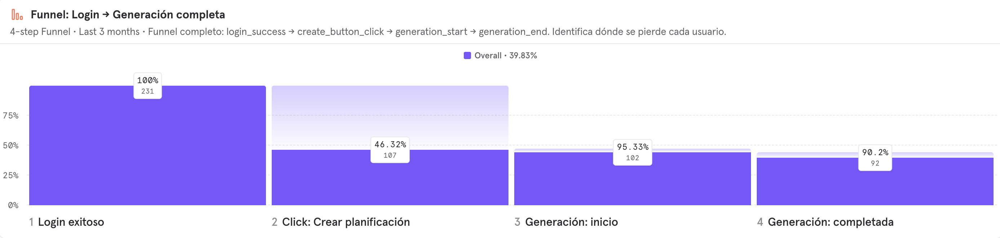
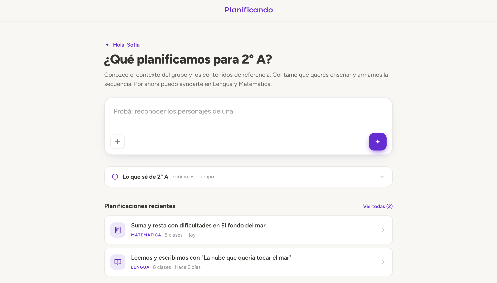

Between March and June 2026, half of the people who logged in never clicked "Create plan": 113 out of 225. The ones who clicked almost always finished, with 92% reaching a completed plan. Registration data pointed the same way. 44% of registered users never generated a plan. Of 229 potential users in the database, 40% ever came back after their first day, and 30% came back and planned. Conversion from login to a finished plan had been falling for three months, from around 70% to around 45%.
One number changed how I read all the others. Our analytics board described the problem as a 46% drop between clicking "create" and the start of generation. When I pulled the live funnel, that step converted at 95%. The real loss was one step earlier, between logging in and clicking at all. We had been repeating a wrong story about our own funnel, and I found out by extracting the data instead of trusting the board's description.

The numbers told us teachers tried the product and did not return. They did not tell us why. We had two candidate explanations that pointed to very different responses.
The first: usability. The entry form was doing damage we could observe directly. A third of users left the "describe your class" field empty. Teachers told us the two context fields were confusing because it was unclear what each one did to the output. The topic field capped at 200 characters and teachers wanted to give more context than it allowed. In a usability session, one participant said the waiting time "seemed infinite."
The second: bandwidth. Most of the teachers we interviewed were dealing with burnout. A product can be perfectly usable and still lose to the fact that its user has no mental room left to adopt anything new. Our research added a third layer: teachers usually arrive with a sequence already in mind and want help with a specific activity inside it, while the product produced long, dense, complete sequences. If that misalignment was the core problem, a friendlier form would not fix it.
A redesign only addresses the first hypothesis. We knew that when we chose it.
Under traditional development costs, rebuilding the core of a product to test a hypothesis is not a defensible bet, and we would not have made it. What changed the math was tooling. With Claude Design for prototyping and Claude Code for implementation, the cost of building the new version dropped to the point where shipping it became the cheapest available way to test whether usability was the barrier. The decision was made as a team, with the CEO, and it included a third motive beyond the hypothesis: shedding legacy code the product had been dragging.
The bet, stated plainly: if usability was the barrier, the new version would show it in the funnel. If it was not, we would have paid a low price to eliminate the largest variable and could look at the harder problems with cleaner data.
My specific contribution to the new version came from the field. Since our first usability rounds in July 2025, teachers struggled to switch subjects inside the same class. By February 2026, users were ending up with duplicated grades because the product tied each grade to a single subject. In June I traced that friction to the data model itself, and the fix shipped on June 17: subject was decoupled from grade, because primary-school teachers do not have subjects, they have grades, and they teach several subjects to the same group.
The new version takes that logic to its conclusion. Instead of starting from a planning form, the product now starts from the grade as a workspace, where the teacher sees her group's context and everything already planned for it. The form became conversational, in steps, to lower the cost of entry that the old form's empty fields were documenting week after week.

Scope was decided against what a five-person team could build and test in weeks. Subject-differentiated questions and diversification by ability level stayed out of this version. The view for school directors and supervisors was deferred to the next cycle: the reasoning was sequential, since a directors' layer has nothing to report on until teachers are actually using the product. Institutional features wait for the teacher flow to prove itself.
The new version launches with school cohorts in the coming weeks. The two numbers that will judge the bet are the ones that motivated it: the share of logins that click "create," and the share of users who come back and plan again.